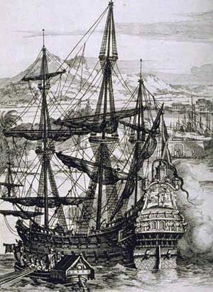

| EL GALEÓN | |
|
 Galeón Español siglo XVI por Alberto Durero |
Un galeón es una embarcación a vela utilizada desde principios del siglo XVI. Consiste en un bajel grande, de alto bordo que se movía por la acción del viento. Es una derivación de la carraca pero combinada con la velocidad de la carabela. Los galeones eran barcos de guerra poderosos y muy versátiles que podían ser igualmente usados para el comercio o la exploración. Desde mediados del siglo XVI se convirtieron en el barco de guerra principal de las naciones europeas, y en su diseño se basaron los tipos posteriores de navíos de guerra de gran tamaño. |